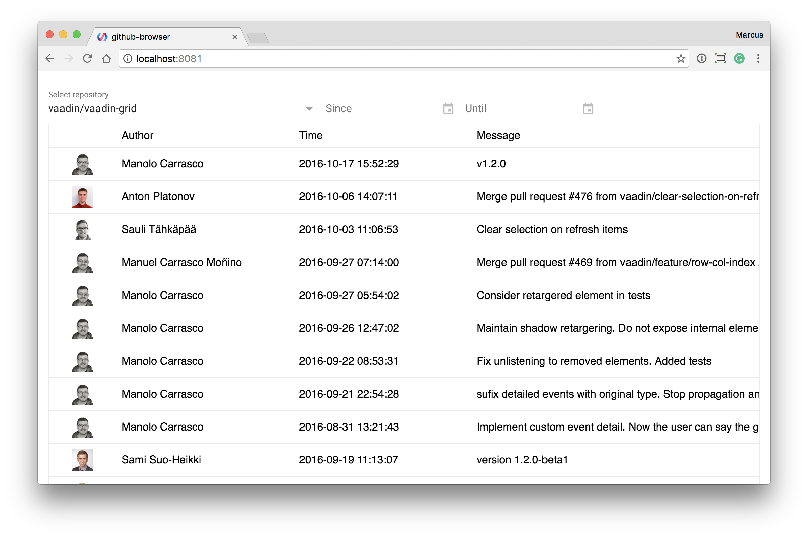

<!--
@license
Copyright (c) 2016 The Polymer Project Authors. All rights reserved.
This code may only be used under the BSD style license found at http://polymer.github.io/LICENSE.txt
The complete set of authors may be found at http://polymer.github.io/AUTHORS.txt
The complete set of contributors may be found at http://polymer.github.io/CONTRIBUTORS.txt
Code distributed by Google as part of the polymer project is also
subject to an additional IP rights grant found at http://polymer.github.io/PATENTS.txt
-->

<link rel="import" href="../bower_components/polymer/polymer.html">
<link rel="import" href="../bower_components/codelab-components/google-codelab.html">
<link rel="import" href="../bower_components/codelab-components/google-codelab-step.html">
<link rel="import" href="../bower_components/google-youtube/google-youtube.html">


<dom-module id="elements-codelab">
  <template>
    <style>
      :host {
        display: block;
      }
    </style>
<google-codelab title="Learn Polymer with Vaadin Elements" last-updated="2017-01-05" feedback-link="https://github.com/vaadin/elements-codelab/issues">
  <google-codelab-step label="Introduction" step="1" duration="5">
    <p>
      This code lab will teach you the basics of Polymer development by building a simple app for browsing GitHub repositories
      and their commits. You should have a solid understading of basic web development to follow along.
    </p>

    

    <h2>What you'll learn</h2>
    <ul class="checklist">
      <li>Installing and using Polymer components</li>
      <li>Using data binding</li>
      <li>Observing changes with listeners and observers</li>
      <li>Fetching JSON data from a REST API</li>
      <li>Laying out your components</li>
      <li>Showing and hiding components conditionally</li>
    </ul>

    <p>
      This code lab is a part of the Vaadin Elements Polymer intro. If you aren't familiar with Polymer development from before,
      take a moment to watch the video below to catch up on the basics before getting started.
    </p>

    <p>
      [INSERT ACTUAL VIDEO HERE]
      <google-youtube video-id="4kt8lK3MoQY">
      </google-youtube>
    </p>
  </google-codelab-step>

  <google-codelab-step label="Getting started" step="2" duration="5">

    <h2>Install prerequisites</h2>
    <p>
      You'll need to have Node and NPM installed to run these steps. If you don't have Node on your computer, go ahead and install
      it from the <a href="https://nodejs.org/en/">Node website</a>.
    </p>

    <p>
      Polymer uses <a href="https://bower.io/">Bower</a> for managing dependencies, install the latest version globally.

      <pre><code>npm install -g bower</code></pre>
    </p>
    <p>
      We'll be using <a href="https://www.polymer-project.org/1.0/tools/polymer-cli">Polymer CLI</a> to initialize, serve
      and build our project. Also install it globally.

      <pre><code>npm install -g polymer-cli</code></pre>
    </p>

    <h2>Setup the project directory</h2>

    <p>
      Next, create a folder for the project:
      <pre><code>
mkdir github-browser
cd github-browser</code></pre>
    </p>
    <p>
      Within the project folder, initialize the project using Polymer CLI:
      <pre><code>polymer init</code></pre> Select the <code>application</code> template:
    </p>
    

    <h2>Serve the content</h2>
    <p>
      You can run the application in your browser (<code>-o</code> opens a new browser window with the served URL):
      <pre><code>polymer serve -o</code></pre>
    </p>

    

    <h2>Open the project</h2>
    <p>Finally, open the project in your editor of choice. Some editors that'll work well for Polymer development.</p>
    <ul>
      <li><a href="https://atom.io/">Atom</a></li>
      <li><a href="https://code.visualstudio.com/">Visual Studio Code</a></li>
      <li><a href="https://www.jetbrains.com/webstorm/">Webstorm</a> (or <a href="https://www.jetbrains.com/idea/">IntelliJ</a>        with plugins)
      </li>
    </ul>

    <aside class="special">
      <p>
        <strong>Note:</strong> all above editors have Polymer plugins that can help you speed up development. Look for them
        in the editor's plugin directory.
      </p>
    </aside>
  </google-codelab-step>

  <google-codelab-step label="Finding repositories" step="3" duration="10">
    <p>
      Your project should have the following structure:
    </p>
    
<p>
  All of the code for this codelab will go in <code>github-browser-app.html</code> &ndash; <code>index.html</code> is only
  used for bootstrapping the application and optionally loading a polyfill for making Web Components work with older browsers.
</p>

<h2>Installing the &lt;vaadin-combo-box&gt; selector</h2>

<p>
  The first step in our project is to implement the dropdown selector for selecting a GitHub repository. We'll then hook it
  up to query the <a href="https://developer.github.com/v3/">GitHub REST API</a>.
</p>
<p>
  Install &lt;vaadin-combo-box&gt; from bower. Note that we need version 1.2 or later.
  <pre><code>bower install --save vaadin/vaadin-combo-box#^1.2.0</code></pre>
</p>

<p>
  Once bower finishes, add an import statement for the component at the top of <code>github-browser-app.html</code>. Make
  sure that the path to your <code>bower_components</code> folder is correct.
  <pre><code>&lt;link rel=&quot;import&quot; href=&quot;../../bower_components/vaadin-combo-box/vaadin-combo-box.html&quot;&gt;
</code></pre>
</p>

<h2>Adding the repository selector to the page</h2>
<p>
  With the dependency installed and imported, we can start using the combo-box. Insert the following within the <code>&lt;template&gt;</code>  tag, just after the closing <code>&lt;/style&gt;</code>tag.

  <pre><code>
  &lt;vaadin-combo-box label=&#34;Select repository&#34; id=&#34;search&#34; filtered-items=&#34;[[repos]]&#34; value=&#34;{{repo}}&#34; filter=&#34;{{filter}}&#34; loading=&#34;[[loading]]&#34;&gt;&lt;/vaadin-combo-box&gt;  
  </code></pre>
</p>

</google-codelab-step>
<google-codelab-step label="Fetching commits" step="4" duration="10">

</google-codelab-step>
<google-codelab-step label="Filtering results" step="5" duration="10">

</google-codelab-step>
<google-codelab-step label="Next steps" step="6" duration="5">

</google-codelab-step>
</google-codelab>

</template>

<script>
  Polymer({
    is: 'elements-codelab'
  });
</script>
</dom-module>